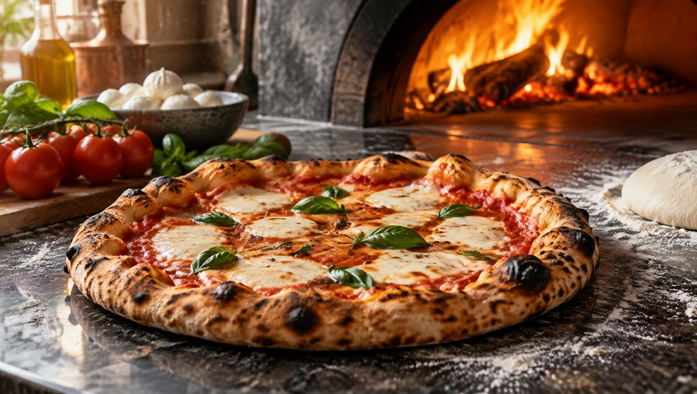
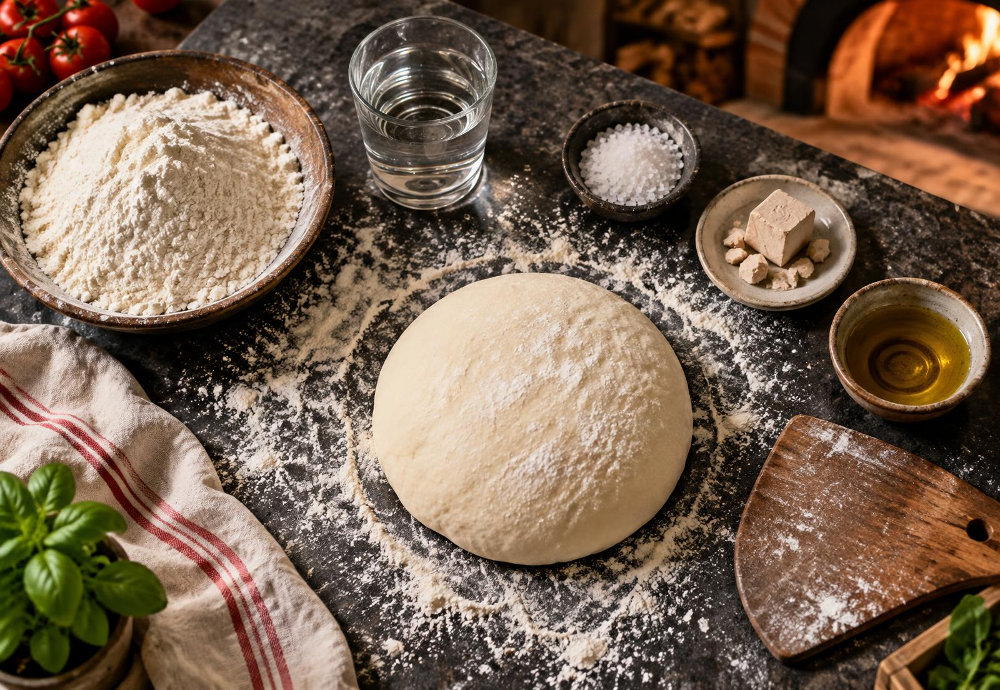
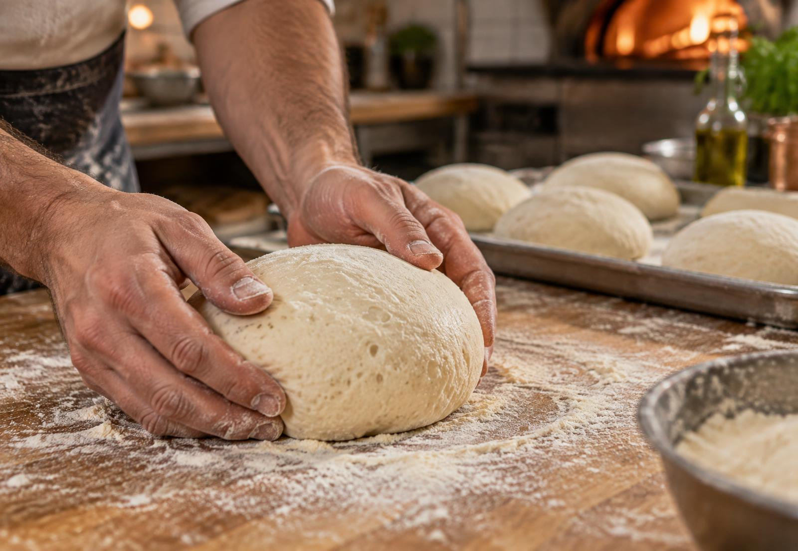
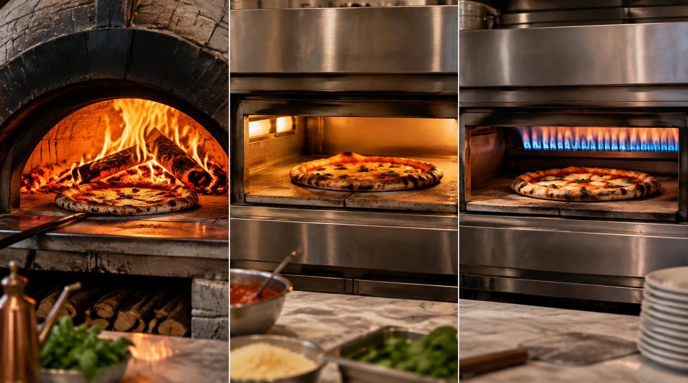

Mistura
Água, farinha, fermento e sal se unem. Evite contato prolongado de fermento concentrado com sal.

Uma viagem da farinha ao forno — história, ciência, técnicas e a clássica Margherita para conquistar a especialidade HD-013.
Capítulo I
Uma história redonda
Pães achatados cobertos com azeite, ervas e outros ingredientes são muito mais antigos que a pizza. Povos do Mediterrâneo já assavam discos de massa em pedras quentes; mas foi em Nápoles, entre os séculos XVIII e XIX, que a combinação de massa fermentada, tomate e forno intenso ganhou a forma que reconhecemos.
O tomate, levado das Américas à Europa no século XVI, demorou a entrar na cozinha popular. Quando passou a cobrir os pães vendidos nas ruas de Nápoles, surgiu uma refeição barata, rápida e saborosa. Em 1889, segundo a tradição, o pizzaiolo Raffaele Esposito serviu à rainha Margherita uma pizza com tomate, muçarela e manjericão — as cores da bandeira italiana. A combinação já existia antes, mas a história ajudou a torná-la um símbolo nacional.
No Brasil, a pizza veio com a imigração italiana no fim do século XIX, ganhou força nos bairros operários de São Paulo e foi adaptada ao gosto local. Hoje, o país criou uma cultura própria de pizzarias, sabores e noites de pizza em família.
Povos egípcios, gregos e romanos preparavam pães achatados com coberturas simples.
O tomate chega à Europa vindo das Américas e, aos poucos, entra na alimentação.
A tradição associa a Margherita à visita da rainha Margarida de Saboia a Nápoles.
A arte do pizzaiolo napolitano é reconhecida pela UNESCO como patrimônio cultural imaterial.

A base de tudo
Forma a estrutura. Suas proteínas, hidratadas e trabalhadas, criam a rede de glúten que retém os gases.
Hidrata a farinha, dissolve o sal e permite a atividade do fermento. A quantidade altera maciez e manuseio.
Dá sabor, fortalece a massa e ajuda a controlar a velocidade da fermentação.
Biológico fresco ou seco: transforma açúcares e produz o gás carbônico que faz a massa crescer.
Também pode entrar: azeite, açúcar ou malte aparecem em receitas específicas. Na napolitana clássica, a massa leva apenas água, sal, fermento e farinha.
Capítulo II · A ciência da massa
O fermento consome açúcares disponíveis na massa e libera gás carbônico e compostos aromáticos. Preso pela rede de glúten, o gás cria alvéolos e volume; o tempo desenvolve sabor e melhora a textura.
Água, farinha, fermento e sal se unem. Evite contato prolongado de fermento concentrado com sal.
Dobrar e esticar organiza o glúten. A massa fica lisa, elástica e capaz de reter o gás.
Na primeira fermentação, a massa cresce em recipiente coberto. Temperatura alta acelera; frio desacelera e aprofunda o sabor.
Divida, forme bolas e faça a fermentação final. Uma boa massa fica aerada, relaxada e abre sem rasgar.

Como saber se está pronta?
Ela aumenta de volume, exibe bolhas e volta lentamente
quando pressionada com um dedo. Se volta de imediato, falta tempo; se afunda e não reage, pode ter passado
do ponto.
Dois sotaques italianos
Não existe uma única “pizza romana”, mas a comparação clássica coloca a redonda romana, fina e crocante, diante da napolitana macia e de borda alta.
Capítulo III · Domínio do calor
Pizza recebe calor por condução do piso, radiação das paredes ou resistências e convecção do ar. O combustível muda o controle, a velocidade e o resultado — mas técnica e pré-aquecimento são tão importantes quanto o forno.

A chama aquece a cúpula e a pedra. Entrega assamento muito rápido, borda inflada e pintas tostadas. Exige girar a pizza, manejar o fogo e equilibrar piso e teto. Para a napolitana, a referência é cerca de 485 °C na abóbada e 60–90 segundos.
Resistências independentes permitem repetir resultados e ajustar calor superior e inferior. Fornos profissionais de lastro chegam à faixa ideal; em forno doméstico, use a temperatura máxima — normalmente 250–280 °C — com pedra ou aço pré-aquecido por 45–60 minutos.
Aquece rapidamente e permite controle fácil da chama. Pode produzir resultado próximo ao da lenha quando tem piso refratário e boa radiação superior. É limpo e regular, mas pede atenção para não queimar a borda antes de firmar a base.
Prova prática
Vermelho do tomate, branco da muçarela, verde do manjericão. Poucos ingredientes deixam a massa e a técnica aparecerem.
Antes de servir
Organização, higiene e segurança fazem parte de uma boa produção — especialmente trabalhando em grupo.
é o assamento típico de uma napolitana em forno a lenha muito quente.
é o diâmetro máximo tradicional indicado para a verdadeira napolitana.
é a fermentação mínima citada pelo decálogo da AVPN para a massa napolitana.